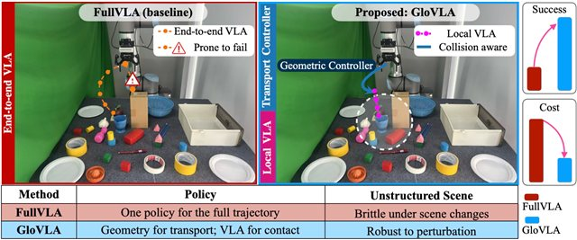
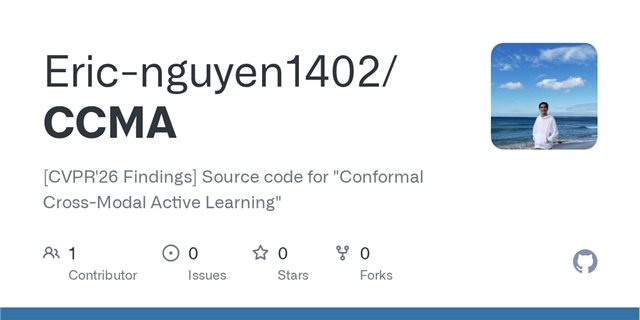
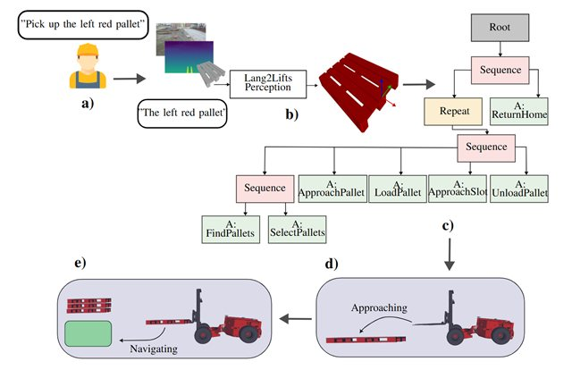
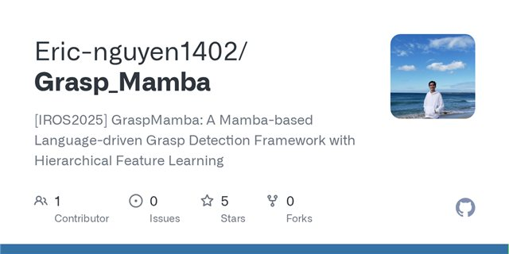
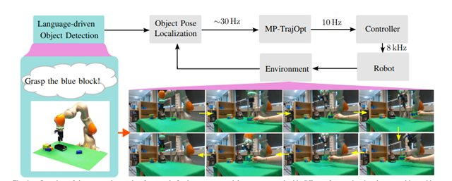
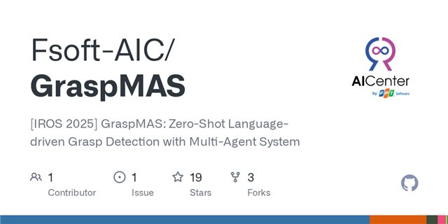

About
I am a PhD candidate at the AIT Austrian Institute of Technology, supervised by Prof. Andreas Kugi. My research areas include robotic perception and vision-language model (VLM) applications for robotics, i.e., vision-language-action (VLA) models. More recently, I have been working on enabling robots to understand and leverage information from vision and language to execute tasks in robotics.
Prior to my PhD, I spent one year as a Junior Scientist at AIT, and before that I obtained a joint MSc degree from the University of Girona, University of Zagreb, and Eötvös Loránd University under the Erasmus Mundus scholarship (2024), and a BSc from Southern Taiwan University of Science and Technology (2021).
Research Interests
I work on vision-language and foundation-model methods for robotic perception, grasping, manipulation, and task-and-motion planning. My research connects natural-language task instructions (VLA), semantic scene representations, and robot planning to enable long-horizon autonomous operation — with applications spanning dynamic robotic grasping and large-scale autonomous machinery operating in unstructured outdoor environments.
Publications





* Equal contribution.
Reviewer Service
- IEEE/RSJ International Conference on Intelligent Robots and Systems (IROS)
- IEEE Robotics and Automation Letters (RA-L)
- IEEE International Conference on Automation Science and Engineering (CASE)
- International Federation of Automatic Control (IFAC)